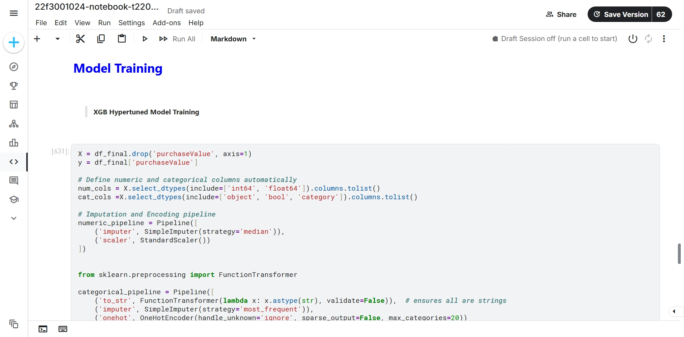

A machine learning model to forecast future customer spending and identify high-value clients.
This project uses historical transactional data to train a regression model that predicts the future purchase value of customers. The goal is to provide businesses with actionable intelligence to optimize marketing spend, personalize customer engagement, and implement effective retention strategies by identifying and nurturing high-value customers.
This project demonstrates an end-to-end machine learning workflow, from data exploration and feature engineering to model deployment and interpretation.
Developed powerful, business-relevant features from raw transactional data, including RFM metrics (Recency, Frequency, Monetary) to capture customer behavior.
Trained and evaluated multiple regression algorithms (e.g., XGBoost, Random Forest) to accurately predict future customer spending, validated with robust metrics like RMSE and R².
Utilized model predictions to segment customers into actionable tiers (e.g., High-Value, At-Risk), enabling targeted marketing campaigns and personalized offers.
Provided clear visualizations and interpreted model results to identify the key drivers of customer value, delivering actionable insights for business stakeholders.
Data Preprocessing: Loaded and cleaned large transactional datasets, handling missing values, and converting data types to prepare for analysis.
Exploratory Data Analysis (EDA): Conducted deep EDA to understand distributions, identify correlations, and uncover initial patterns in customer purchasing behavior using Matplotlib and Seaborn.
Model Training & Selection: Systematically trained several regression models, fine-tuned hyperparameters using Grid Search, and selected the best-performing model based on cross-validated performance.
Evaluation: Assessed the final model's accuracy on a held-out test set, analyzing its predictions and residual errors to ensure reliability and business utility.
The insights from this model can directly inform critical business strategies: